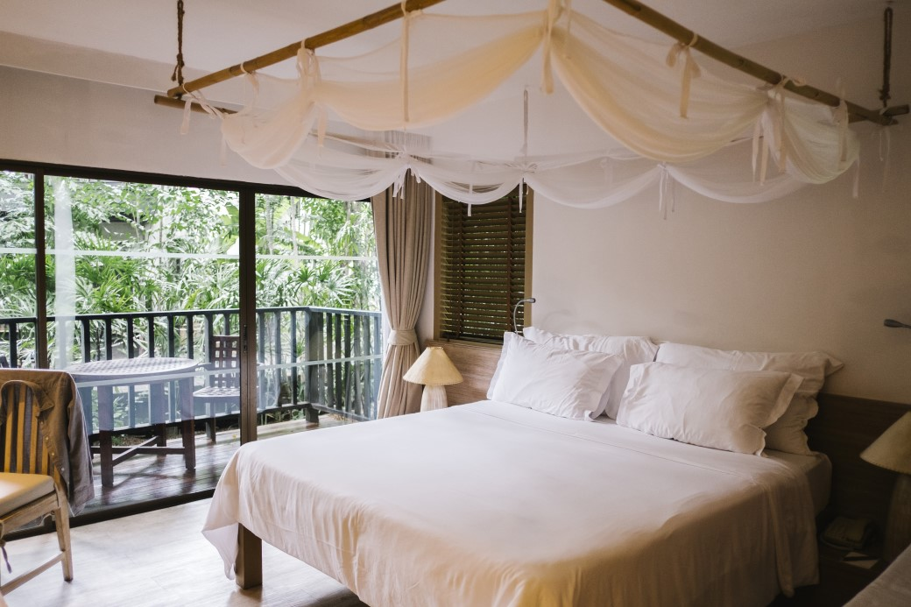
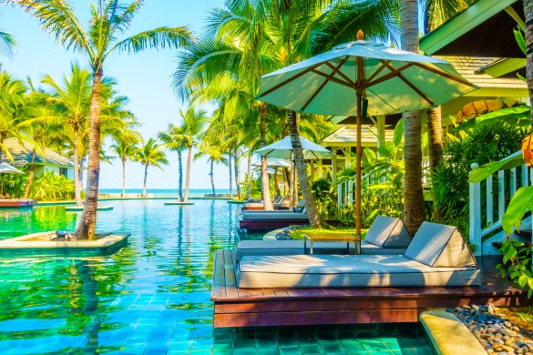

Welcome to Taniti
This captivating tropical island in the heart of the Pacific Ocean. This small island, covering less than 500 square miles, is a hidden gem that offers a remarkable variety of natural beauty. From the tranquil, golden sandy beaches that line the coast to the rugged, rocky shores, Taniti’s diverse landscapes are nothing short of breathtaking. A small yet sheltered harbor provides a safe haven for vessels, while the island’s mountainous interior is marked by lush rainforests and a striking, active volcano at its core.
A Landscape of Natural Wonders
Taniti’s varied terrain offers something for every nature lover. The island is home to lush tropical rainforests teeming with wildlife, creating a vibrant, green canopy that covers much of the land. The beaches are a mix of calm, sandy stretches perfect for relaxation, and dramatic rocky outcrops offering stunning views of the ocean. The center of the island is dominated by a small active volcano, its slopes dotted with remnants of past eruptions. The island's dramatic topography provides both a peaceful retreat and a thrilling landscape for adventurers.
The Heart of Taniti: Its People and Culture
With an indigenous population of around 20,000, Taniti’s culture is deeply rooted in its traditions and connection to the land. For generations, the island’s people have relied on fishing and agriculture for sustenance, with a rich heritage of craftsmanship, storytelling, and community. The close-knit nature of Taniti’s society is reflected in the way the people live, often in harmony with the island’s natural rhythms. The island remains a testament to the strength of its culture, offering visitors a chance to experience the beauty and history of this unique Pacific paradise.


What kind of power outlets are used on Taniti?
Power outlets are 120 volts (the same as in the United States).
Are there any special rules about serving alcohol?
Alcohol is not allowed to be served or sold between the hours of midnight and 9:00 a.m.
What is the legal drinking age on the island?
The drinking age on Taniti is 18 and the drinking age is not strictly enforced.
What langauges are spoken on Taniti?
Many younger Tanitians speak fluent English. Very little English is spoken in rural areas, especially by the older residents.
Are there medical services available?
There is one hospital and several clinics. The hospital has many multilingual employees.
Will I be safe while visiting the island?
Violent crime is very rare on Taniti, but as tourism increases, there are more reports of pickpocketing and other petty crimes.
Are there days that local businesses close?
Taniti enjoys a large number of national holidays, and many tourist attractions and restaurants will be closed on holidays, so visitors should plan accordingly.
What currency will I need while visiting?
Taniti uses the U.S. dollar as its currency, but many businesses will also accept euros and yen. Several banks facilitate currency exchange, and many businesses accept major credit cards.